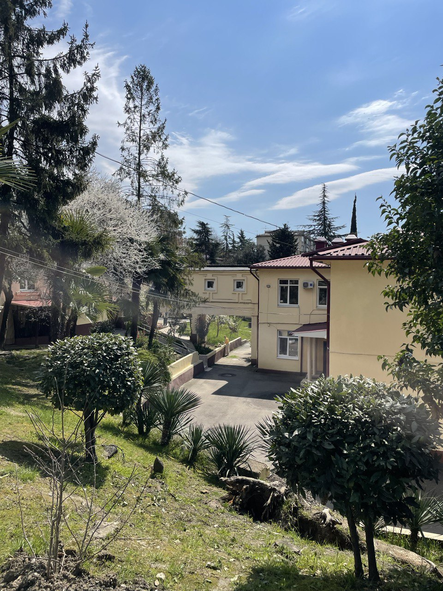

Экологическая тропа (учебно-туристическая тропа)
— обустроенные и особо охраняемые прогулочно-познавательные маршруты, создаваемые с целью экологического просвещения населения через установленные по маршруту информационные стенды. На территории НОУ гимназии "Школа бизнеса" организована подобная тропа — дорожка, вдоль которой собраны и высажены различного рода растения, произрастающие в городе Сочи.